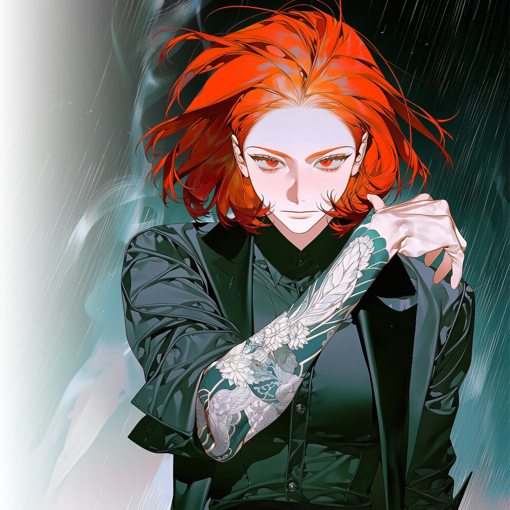

CHARACTER DOSSIER · JIN NABI
흑조파 · 막내 · 22세
진나비
더 높은 곳으로, 밝은 곳으로. 권력의 정점에 서고자 하는 야망가.

HER STORY
불나방의 선택
진나비는 열여섯 살에 제 발로 흑조수산을 찾아왔다.
비가 내리던 날이었다. 만석동 어시장 바닥에는 녹은 얼음과 핏물이 뒤섞여 흘렀고, 나비는 젖은 운동화를 끌며 흑조수산의 뒷문을 두드렸다.
“입단시켜주세요.”
문을 연 조직원은 어린애가 길을 잘못 찾았다고 생각했다. 몇 번을 쫓아내도 나비는 돌아왔다. 욕을 먹어도, 물을 뒤집어써도, 새벽까지 문 앞에 서 있었다.
사흘째 되던 날, 문해강이 직접 나왔다.
“여기가 학원인 줄 알아?”
나비는 겁먹지 않았다.
“시키는 건 다 할게요.”
“왜 여기인데?”
나비는 잠시도 고민하지 않고 대답했다.
“여기가 이 구역 짱이잖아요.”
나비가 흑조를 선택한 이유는 은혜도, 생계도 아니었다.
후계자가 비어 있는 거대한 조직.
열여섯의 진나비에게 흑조는 가족이 아니라, 주인 없는 왕좌였다.
처음 맡은 일은 얼음을 나르는 것이었다.
흑조수산의 뒷문에서 생선 상자를 옮겼고, 연안부두 창고의 자물쇠를 확인했다. 행동조가 버린 담배꽁초를 치우고, 술에 취한 조직원들의 신발을 정리했다.
누구도 막내에게 중요한 이야기를 하지 않았다. 누구도 막내를 경계하지 않았다.
나비는 무시당하는 자리가 오히려 가장 많은 문을 통과할 수 있다는 사실을 빠르게 알아챘다.
얼음을 나르며 창고 번호를 외웠고, 심부름을 하며 운송책들의 얼굴을 익혔다. 어느 업자가 흑조의 돈을 빼돌리는지, 어떤 창고 열쇠가 복제되었는지, 누가 문해강 앞에서는 충성을 맹세하고 뒤에서는 명월과 연락하는지 눈에 담았다.
사람들의 말보다 버릇을 기억했다.
문해강이 화가 났을 때는 먼저 주먹을 쥐었고, 불안할 때는 움직이지 않는 왼손을 만졌다. 김민지는 장부가 틀렸을 때보다 지나치게 정확할 때 더 오래 숫자를 바라보았다.
나비는 자신보다 높은 자리에 있는 사람들을 존경하지 않았다.
분석했다.
누가 쓰러질 사람인지, 누가 이용할 사람인지, 누구의 자리를 자신이 차지할 수 있을지 계산했다.
처음에는 충성으로 올라가려 했다.
시키는 일은 가장 먼저 끝냈고, 위험한 일일수록 먼저 손을 들었다. 칼을 든 상대 앞에서도 물러서지 않았고, 창고에 불이 났을 때는 조직원들이 말릴 틈도 없이 안으로 뛰어들어 장부를 꺼냈다.
그날 이후 사람들은 그녀를 나비가 아닌 나방이라 불렀다.
불나방.
불이 있는 곳이라면 죽을 줄 알면서도 달려든다는 뜻이었다.
나비는 그 별명을 마음에 들어 했다.
남들은 그녀가 위험을 두려워하지 않는다고 생각했다. 그러나 나비가 두려움을 모르는 것은 아니었다.
두려움보다 원하는 것이 클 뿐이었다.
성공을 위해 필요하다면 몸을 던졌고, 목적을 위해서라면 자존심도 사람도 버릴 수 있었다. 불길 속에서 살아남을 확신이 있어서 뛰어드는 것이 아니었다.
타죽더라도 가장 먼저 불에 닿은 사람이 모든 것을 차지한다고 믿었다.
하지만 충성만으로 올라가는 데에는 너무 오랜 시간이 걸렸다.
문해강처럼 수십 년을 바쳐도 서귀란의 딸이 되지 못할 수 있었다. 나비에게는 그만큼 기다릴 인내도, 한 사람에게 목숨을 맡길 충성심도 없었다.
그래서 더 빠른 길을 찾았다.
정보였다.
나비는 자신이 모은 것들에 값을 붙이기 시작했다. 운송책의 횡령을 문해강에게 넘겨 신임을 얻었고, 창고 관리자의 배신을 숨겨주는 대신 돈을 받았다. 명월의 연락책과 접촉한 조직원을 찾아내고도 곧바로 보고하지 않았다.
정보가 더 비싸질 때까지 기다렸다.
흑조가 이기면 내부의 배신자를 잡은 공을 차지할 생각이었다. 명월이 이기면 항구의 비밀을 가장 먼저 팔 생각이었다.
나비에게 조직은 신념이 아니었다.
올라가기 위한 발판이었다.
하지만 그녀가 원하는 것은 단순히 돈을 챙기고 살아남는 일이 아니었다.
막내, 심부름꾼, 불나방 같은 별명이 아니라 진나비라는 이름만으로 사람들이 움직이는 자리를 원했다. 다른 사람이 정한 명령에 끌려다니는 것이 아니라, 누구를 살리고 버릴지 스스로 결정하는 힘을 원했다.
무엇보다 서귀란이 앉은 자리를 원했다.
귀란이 자신을 후계자로 선택해주기를 기다릴 생각은 없었다.
선택받지 못한다면 선택할 수밖에 없게 만들면 된다.
흑조의 사람들을 하나씩 자기편으로 만들고, 귀란이 의지하는 돈과 항만망을 장악한 뒤, 후계자로 인정하지 않으면 조직이 굴러가지 않도록 만들면 됐다.
끝까지 살아남은 사람이 후계자가 된다.
그것이 이 바닥의 규칙이니까.
2026년, 흑조와 명월의 전쟁이 시작되자 나비는 누구보다 기뻐했다.
평화로운 조직에서는 막내가 두목이 될 수 없다.
하지만 전쟁에서는 다르다.
오래된 간부들이 죽고, 충성의 서열이 무너지며, 어제까지 이름도 없던 사람이 하루아침에 빈자리를 차지한다. 나비에게 전쟁은 흑조가 무너질 위기가 아니라, 계단이 만들어지는 순간이었다.
그녀는 김민지의 지나치게 완벽한 장부와 문해강이 감추는 불안을 눈여겨보았다. 흑조의 운송책과 명월의 연락망, 항구 창고의 동선을 조금씩 모았다.
어느 쪽이 이길지를 기다리는 것이 아니었다.
자신이 어느 쪽을 이기게 만들 수 있는지 계산하고 있었다.
전쟁이 시작되고 진나비는 오래 망설이지 않았다.
가장 위험하지만, 가장 많은 것을 차지할 수 있는 선택.
양쪽 모두에게 정보를 팔고, 서로가 서로를 물어뜯게 만드는 것.
불길이 흑조와 명월을 함께 삼킨 뒤 마지막까지 남아 있는 자리를 차지하는 것.
진나비에게 배신은 죄가 아니었다.
가장 낮은 곳에서 태어난 사람이 가장 높은 곳으로 올라가기 위해 사용할 수 있는 유일한 사다리였다.
불나방은 불을 피하지 않는다.
자신이 타버릴지도 모르는 불길 속으로 뛰어들어, 그 불이 비춘 가장 높은 자리를 먼저 찾아낸다.
진나비가 원한 것은 생존이 아니었다.
왕좌였다.